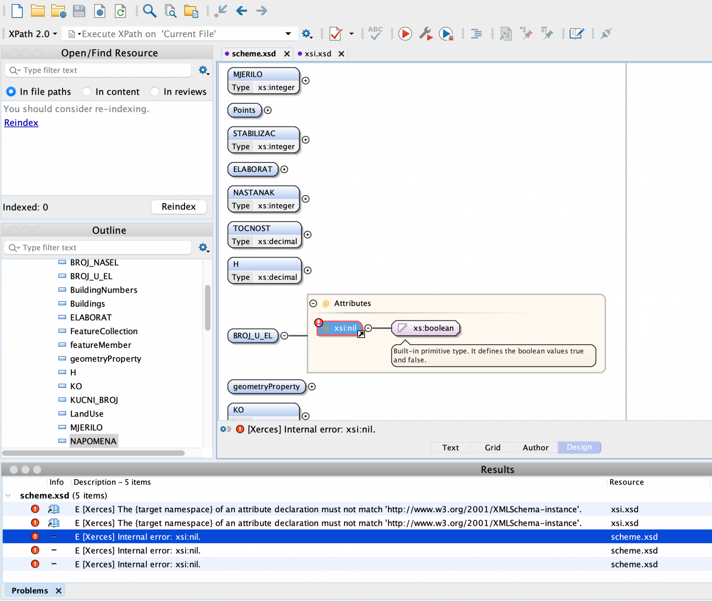

Trebam napisati upit: Katastarske čestice koje se planiraju kao zaštitna šuma. Da li da tražim čestice koje će u potpunosti biti prekrivene zaštitnom šumom, kojima će većina površine biti zaštitna šuma ili koje će samo sadržavati zaštitnu šumu. Što bi tu bilo logično?
jel netko rijesio onaj hive? kako to tocno instalirati i postaviti da mogu kreirati tablice i napisati upit?
mgd je li uspio ko slozit taj hive?
Imaju kakve malo detaljnije upute osim onih u readme.txt ili da samo radim po ovim primjerima? U jednom imaju upute za instalaciju, u drugima nisu, treba onda to uopce?
I3loodHound mi smo radile po prvom primjeru koji je profesor stavio na materijale
Jel treba predat .xml ili .gml datoteke?
Jel se može netko tko zna riješavati ove sql upite javiti privatno, kolega i ja imamo 5 koje ne znamo riješiti budemo platili neku lovu.
Jel zna ko kako rijesit ove error-e? 
Jel moze netko rec ko je predao koje sve datoteke moramo ukljucit u predaju? XSD, XML, GML…?
Moze neko poslikat strukturu tablice u hive i kako izgledaju jsoni za import?
Jel su vama upisani bodovi na FER webu (piše 1. ispitni rok) ? Jel netko zna iz čega su ti bodovi ?
Mc2 Moja pretpostavka je da je to projekt + predavanj + aktivnost na predavanjima, npr ja imam 26, bio sam na svim predavanjima = 5, aktivnost na predavanjima = 0, pa pretspoavljam da sam dobio 21 iz projekta